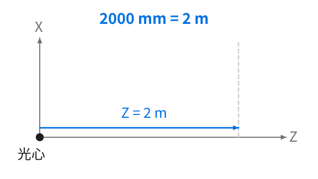
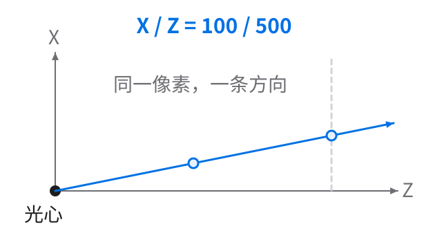
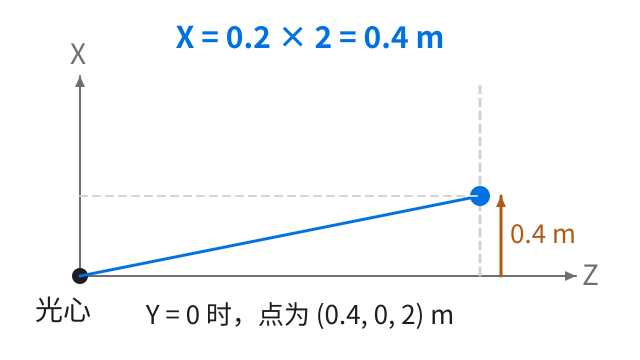

同一台设备能够同时输出彩色画面和深度图。把两幅图叠起来看着像是对齐了，并不代表某个红色像素的深度真的来自那一点。将这对图像交给建图算法前，先说清每一个像素对应哪个时刻、哪台相机和多长的距离。
深度图里的数究竟量到了哪里
RGB 记录颜色，D 表示深度。在 ROS 常见的深度图约定里，深度是点沿相机光轴的 z 坐标。比如两点都在正对相机、距离光心平面 2 米的一面墙上，即使一个点在画面左侧、另一个在中间，两点的 z 值也可以相同。左侧点到光心的直线距离却稍长一些。
RGB-D 中的两个像素数组通常各有自己的成像模型。同一时刻、相同分辨率，只是比较数组的前提之一。若两个镜头有基线，近处物体在左右图像的位置本就会不同。所以取出“同一行同一列”是一次几何假设，必须由实际对齐过程支撑。
先读图像编码和驱动说明。ROS REP 118 规定的标准浮点深度以米表示，无效值可以是 NaN。另有常见的 16 位无符号编码以毫米表示，零表示无效。像素值 2000 按毫米解释就是 2 米。把它直接当成米，整张地图的量级都会错。把无效零当真点，云里可能凭空堆出一批相机原点上的点。
从像素算出一个空间点
针孔相机内参包含以像素为单位的焦距 fx、fy，以及光轴在图上的主点 cx、cy。对已经校正畸变、内参又与分辨率匹配的图像，像素 (u,v) 的反投影是 X=(u−cx)Z/fx、Y=(v−cy)Z/fy、Z=深度。像素和焦距的单位抵消，结果与深度单位一致。
假定 fx=500 像素、cx=320，某点横坐标 u=420，深度 Z=2 米。先求它离主点多远，是 100 像素。将它除以焦距得到 0.2，再乘 2 得 X=0.4 米。如果图像等比缩小一半，理想连续坐标下偏移与焦距都应缩小一半，算出的 X 仍为 0.4 米。若只改图像不更新内参，结果就会变。
把一个深度像素放回空间
只画相机 X–Z 截面的俯视示意。横轴 Z 朝前，纵轴 X 表示横向偏移；示例像素位于主点所在行，暂取 Y=0。

先把深度单位换对
查看大图
假设驱动给的是以毫米表示的 16 位深度，像素读数为 2000。先除以 1000，得到沿光轴的 Z=2 米。图中竖线代表同一个 Z 平面，侧面的点也可以落在这条线上。Z 并不是从光心到任意像素所见点的斜线距离，两种距离只有在光轴上才相同。

像素偏移变成比例
查看大图
设横向焦距 fx=500 像素，主点 cx=320，目标像素 u=420。相对光轴的偏移是 100 像素，除以 500 得到 X/Z=0.2。这个比值没有单位。图中蓝色斜线表示同一条观察方向；单凭这条线，还不能知道点在近处还是远处。

深度把点固定下来
查看大图
用 Z=2 米截住这条射线，X 就是 0.2×2=0.4 米。蓝点因此位于横向 0.4 米、前向 2 米的位置。若此像素恰好在主点所在行，Y=0，三维坐标可写成 (0.4,0,2)。这一步只适用于畸变已校正、内参与图像一致且深度有效的输入。
一个像素提供方向，有效深度提供沿光轴的位置。先确认编码单位和无效值，再做几何计算，才能得到有意义的空间点。
小练习：同样的像素和内参，深度改成 1000 毫米，X 变成多少？
1000 毫米是 1 米，X=100÷500×1=0.2 米。方向 X/Z 仍是 0.2，点沿同一射线移近了一半。
彩色相机与深度相机可能拥有不同的光心、焦距和分辨率。选取彩色像素上的深度时，可以使用驱动已经对齐到彩色图的深度流，也可以先反投影深度点，按两相机外参变换，再投到彩色图上。轮廓的一侧可能只被一台相机看见，因此对齐后出现局部空洞是合理现象。
对像素反投影之前还要辨认原始图和校正图。原始图边缘通常保留镜头畸变，校正图则已按标定模型重采样。把原始像素直接代入为校正图准备的针孔公式，靠近中心处未必看得出问题，越到边缘误差可能越明显。

两条 30 Hz 的流也会错开
假设颜色和深度都以每秒 30 帧输出，但深度的时间戳稳定地落后一帧，错开约 33 毫秒。静止桌面上两幅图仍可能贴得很好。一根以 1 米每秒横移的杆，在这段时间里移动了约 3.3 厘米，于是彩色轮廓附近会贴上后方墙面的深度。
先按驱动约定画出两路的采集时间、到达时间和配对后的差值。不要通过重复上一帧或改写时间戳把数字凑齐。选一段从静止到运动、再回到静止的短录包，比较边缘偏差是否只在运动时放大，这有助于把时间错配与固定的外参偏移区分开。
给建图端做一次最小验收
用一面接近正对相机的平墙检查中心深度，再用一个突出的物体检查靠近轮廓时颜色与深度是否对应。记录所用图像分辨率、光学坐标系、深度单位以及相机内参所属的图像。这样换另一台相机时，能逐项对照输入契约。
一个便于重复的检查顺序是先看平面，再看遮挡，最后看运动。平面里的深度普遍放大一千倍，优先查单位。只有前景轮廓旁出现背景深度，则查对齐与遮挡。静止时正确、相机一转就错位，可比较曝光与深度测量的时间差。每个场景主要改变一个条件。
若要把点云接到机器人，还要确认从光学坐标到机体的变换。局部里程计通常用连续的 odom 坐标表达短时运动，全局 map 坐标可以因重定位而校正。将机器人朝前平移，再轻微俯仰，分别查看点云和机体运动方向，往往比只盯着整张彩色地图更容易发现轴向用反。